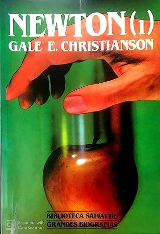

Newton (1)
Reseña por Jorge I. Zuluaga

Ver reseña en GoodReads (necesita cuenta)
Lo único que nos queda es conformarnos leyendo biografías, algunas buenas y otras que se reducen a una lista de hechos, logros y obras sin mayor profundidad. Obras ilustradas por unas pocas imágenes, pinturas o fotos de tumbas y monumentos, repetidas hasta la saciedad en todas partes.
Es por esto que cuando uno se encuentra con una EXCELENTE biografía, una con la que, al menos en tu mente, vez reproducirse la historia cotidiana de esos personajes, algunos de los más mínimos y humanos eventos (una lista de mercado, una enfermedad, un pleito legal, un romance, etc.) y no solo los hechos y obras por los que los recordamos, la ilusión de haberlos conocido se hace más vivida.
Esto es lo que creo logra justamente Gale Christiansen en esta maravillosa biografía de uno de los intelectos más grandes que ha conocido nuestra especie, o por lo menos del que tenemos una relación detallada de su vida por haber vivido en un tiempo en el que quedaron registrados hasta los más mínimos detalles de su existencia y producción intelectual.
Como físico me preciaba de conocer un poco más que cualquiera sobre la vida de Newton y su tiempo. Al leer la biografía descubrí mi casi absoluta ignorancia sobre el personaje. Y no es que no hubiera leído antes al menos una biografía breve sobre él, es que esta biografía te sumerge en las profundidades de la vida de Isaac Newton, al punto de entender que gran parte de lo que sabemos casi todos sobre él es más mitológico que verdadero.
La edición que estoy leyendo y que pertenece a la excelente colección "Biblioteca Salvat de Grandes Biografías" (algunos de los libros sobre los cuáles he escrito y escribiré reseñas aquí) es la versión española del libro "In the presence of creator, Isaac Newton", considerada por muchos como una de las más completas y profundas escritas acerca del filósofo del Linconshire. Esta dividida en dos volúmenes (aunque la numeración de las páginas del segundo volumen es una continuación de las del primero, de modo que ambas deberían considerarse como lo que es el libro original, un único libro.) La traducción es excelente.
¿Qué sabemos sobre Newton la mayoría (y me incluyo hasta hace un par de días)? Que fue un filósofo natural inglés (un matemático y físico como lo llamaríamos hoy); que escribió un libro titulado (en breve) "Principia" donde formulo las leyes de la mecánica y de la gravedad; que fue un personaje medio huraño, tal vez misógino y en el mejor de los casos que además ocupo una posición de poder como director de la Casa de la Moneda inglesa. ¿Algo más? ¡difícilmente!
Una lectura de este primer tomo (que se extiende desde antes del nacimiento del hombre hasta su período más productivo, alrededor de una edad de 38 años) nos presenta un Newton COMPLETAMENTE nuevo:
Newton el terrateniente (heredo de su madre y padrastros amplias Tierras en su Linconshire natal de las que derivaba una jugosa renta anual), Newton el prestamista (una actividad que realizó con éxito en sus años como universitario), Newton el sirviente (o sizar, la más baja condición de los estudiantes de Cambridge durante la restauración y que ocupo a pesar de que su familia no era completamente pobre), Newton el penitente, el tímido, el sensible (murió virgen por elección propia a pesar de nunca ordenarse como sacerdote, prefería encerrarse en su cabeza antes que relacionarse con nadie y era increíblemente sensible a la crítica), Newton el amante del color Bermejo (su residencia en Cambridge cuando ya era un catedrático solo tenía muebles y cortinas de ese color), Newton el puritano, Newton el alquimista, Newton el mecánico, Newton el constructor de telescopios, Newton el relojero, Newton el anatomista físico, Newton el virtuoso (en su tiempo el adjetivo "virtuoso" estaba destinado a los filósofos naturales), Newton el creativo, Newton el insomne, Newton el procrastinador, Newton el polímata, Newton el workoholico, Newton el perfeccionista, Newton el clarividente científico, Newton el autodidacta, Newton la máquina pensante, Newton el excéntrico profesor de matemáticas, Newton el eunuco emocional, Newton el experto pulidor de lentes, Newton el acumulador patológico de manuscritos, Newton el ladrón de libros (p 241), Newton el Jeova sanctus unus (su pseudonimo que utilizó en sus estudios de alquimia y teología), Newton el más completo experto del mundo en escritos alquímicos presentes y pasados, Newton el sietemesino sobreviviente, Newton el invencible experimentalista, Newton el farmaceuta, Newton el acreedor tenaz, Newton el filántropo, Newton el hereje arriano...
¿Pero cómo sabemos todo esto y cómo logra Christiansen pintarnos con tal detalle la vida de este genio?
Diría, después de leer este primer tomo, que hay dos razones: (1) la inmensa admiración que despertó Newton en las personas de su época que llevaron a que incluso antes de morir empezaran a recabarse datos biográficos detallados, muchos de los cuáles han sido recogidos en esta biografía; y (2) la obsesión del mismo Newton por conservar todo lo que escribió en su vida, desde sus notas de adolescencia hasta los borradores de los borradores de sus trabajos, las cartas recibidas y copias de las cartas enviadas, así como naturalmente los libros que coleccionó y uso durante su vida (muchos de los cuáles todavía reposan en la biblioteca del Trinity College de Cambridge.)
A todo eso se suma el juicioso trabajo realizado por Christiansen de leer (creería yo) todas las biografías y escritos hechos sobre Newton antes que él (y que cita permanentemente en el texto hasta hacerlo en ocasiones difícil de leer), en especial los escritos de John Keynes, el economista del siglo xx y uno de los que conoció algunos de los más engorrosos secretos intelectuales de Newton.
A los que aprecien conocer a fondo la humanidad de sus ídolos intelectuales, a cualquier físico, astrónomo o matemático que quiera conocer el contexto en el que surgieron las revolucionarias ideas del tiempo de este gigante, no deben dejar de leer la biografía de Christiansen.
Yo voy por la mitad. Espero en breve poder contarles algo mas sobre el viejo Newton.